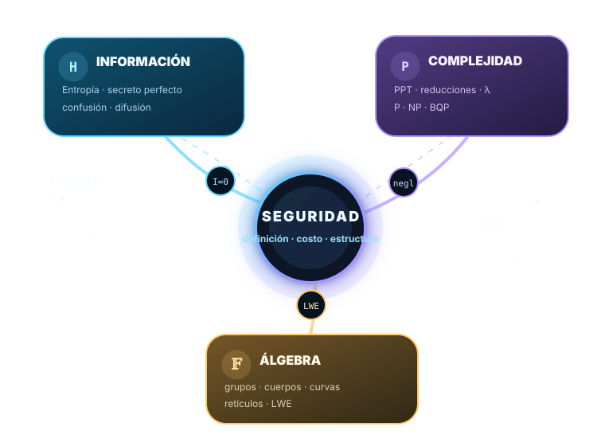

Medir incertidumbre
Calcular entropía, sorpresa, redundancia e información mutua sin confundir distribución con seguridad.
Una ruta didáctica para responder tres preguntas: qué significa seguridad, cuánto cuesta romperla y qué estructuras matemáticas hacen posible construirla.

La seguridad no es una propiedad del nombre del algoritmo: depende de una definición, un adversario, supuestos y una implementación.
Cada objetivo se vincula con una simulación y con una evidencia observable.
Calcular entropía, sorpresa, redundancia e información mutua sin confundir distribución con seguridad.
Separar secreto perfecto de seguridad computacional y reconocer el costo logístico del one-time pad.
Observar confusión y difusión por rondas y explicar por qué una salida caótica no prueba seguridad.
Diferenciar longitud de clave, espacio de búsqueda, bits de seguridad, paralelización y modelo cuántico.
Comprender qué garantiza una prueba condicional y qué no resuelve la pregunta abierta P frente a NP.
Relacionar grupos, cuerpos, curvas y retículos con AES, Diffie–Hellman, ECC y criptografía poscuántica.
El material adjunto se reorganiza como una jerarquía: definición ideal, costo del ataque y estructura matemática.
Pregunta: ¿qué significa no revelar información?
Pregunta: ¿qué recursos necesita el mejor ataque?
Pregunta: ¿dónde vive el problema difícil?
Trece estaciones ordenadas. Podés seguirlas en secuencia o abrir cada recurso de forma independiente.
Comparador real entre César, OTP y AES-GCM mediante propiedad, adversario, victoria y recursos.
El cambio metodológico y los tres pilares, con precisiones conceptuales y fuentes primarias.
Curva H(p), sorpresa, redundancia, muestra empírica y convergencia.
Distribuciones a priori y a posteriori, información mutua y reutilización de clave.
Entropía, semillas, PRNG, CSPRNG, estado, predicción y aplicaciones reales.
Capas por rondas, mensaje o clave, distancia de Hamming, SAC, BIC y mapa de influencia.
Desafiante, adversario, oráculo y ventaja al comparar aleatorización con reutilización.
Fuerza bruta clásica, idealización de Grover, paralelización y escalas temporales.
GF(2⁸), grupos cíclicos, una curva elíptica pequeña y ecuaciones LWE con ruido.
Bits manipulables, tabla de verdad, AES-CTR y ataque observable por reutilización de contador.
Relaciones entre pilares, modelos de seguridad, primitivas y amenaza cuántica.
Búsqueda, filtros, ejemplos, relaciones y progreso de dominio local.
Cuarenta y dos preguntas con niveles, explicaciones y retroalimentación inmediata.
Preparación docente, exposición, práctica autónoma, repaso y evaluación.
Presenta cada estación dentro de un recorrido único, con objetivos, duración y navegación anterior/siguiente.
Lectura complementaria del repositorio con fórmulas, síntesis, errores frecuentes y bibliografía.
Aritmética modular, Euclides, inversos y recursos previos para quien necesite reforzar fundamentos.